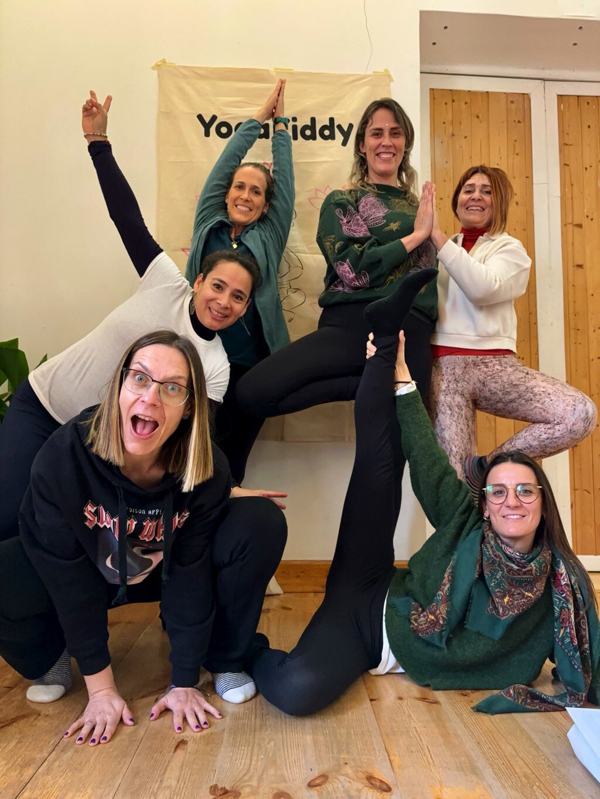
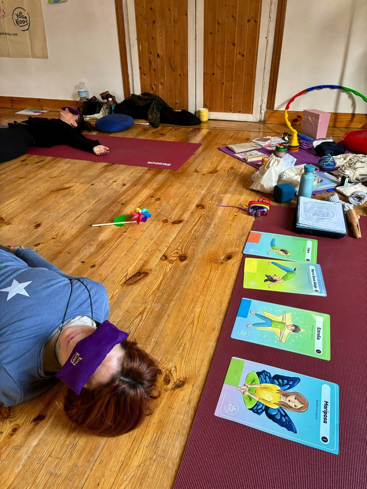
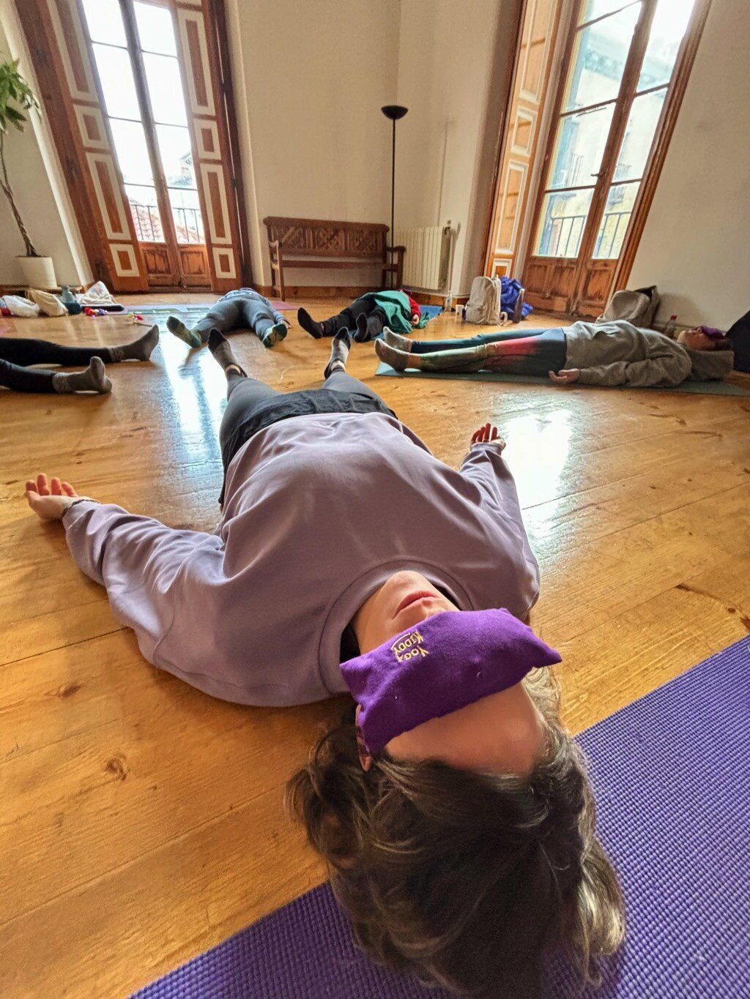
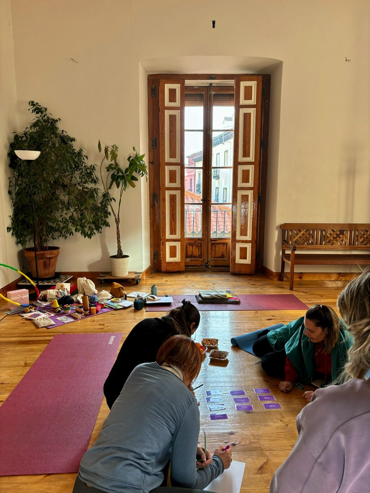
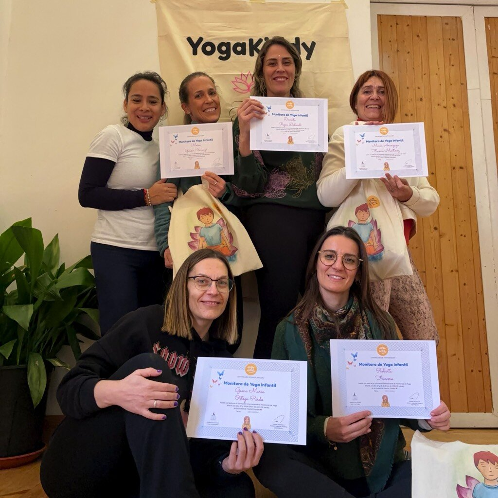
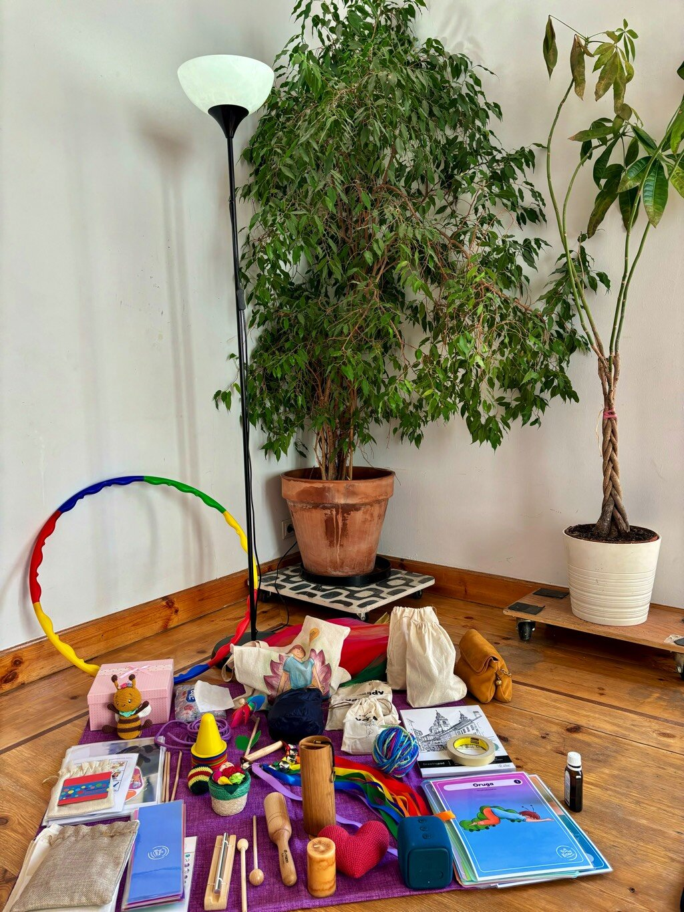

"La semana pasada tuve el privilegio de asistir a una entrenamiento presencial de formación de monitoras de yoga infantil en Madrid, España. Este encuentro de dos días se centró en el desarrollo personal y profesional de aquellos interesados en promover el bienestar físico y mental de los niños mediante la práctica del yoga. El curso combinó teoría y práctica, lo que nos permitió experimentar directamente los beneficios de esta disciplina ancestral adaptada a las necesidades específicas de nuestras infancias modernas.
Deseo compartir contigo mi experiencia durante ese fin de semana único e inolvidable, así como algunas reflexiones acerca de cómo el yoga puede ayudar a transformar positivamente la vida de muchos pequeños.

Una Comunidad Comprometida con el Bienestar Infantil
Lo primero que quiero resaltar es el increíble espíritu de colaboración y solidaridad presente durante todo el fin de semana. Los participantes provenían de distintos orígenes y habían decidido reunirse con un propósito común: expandir sus horizontes personales y profundizar sus conocimientos sobre el yoga infantil. Esto creó un clima ideal para el aprendizaje y el crecimiento colectivo.
A medida que avanzaba el programa, pude observar cómo cada persona mostraba genuino interés en los demás, ofreciendo consejos, ideas y opiniones constructivas que enriquecieron el proceso formativo. Además, hubo momentos en los que reímos juntos, compartimos anécdotas y hasta bailamos al ritmo de música relajante; actividades que fortalecieron los vínculos entre todos los miembros de la comunidad.

Técnicas Novedosas y Herramientas Prácticas
Otro aspecto destacable del curso fueron las técnicas innovadoras y herramientas prácticas que aprendimos para enseñar yoga a niños y niñas. Desde posturas creativas inspiradas en animales y elementos naturales, hasta ejercicios de respiración y meditación diseñados específicamente para estimular la imaginación y calmar la mente de los pequeños practicantes.
Asimismo, recibimos orientaciones didácticas sobre cómo planificar sesiones de yoga divertidas y efectivas, teniendo en cuenta factores tales como la edad, el nivel de desarrollo motor y cognitivo, y las preferencias individuales de cada grupo. Todo esto resultó particularmente útil, ya que nos preparó para enfrentar retos reales que podríamos encontrarnos al trabajar con niños en contextos educativos o recreativos."

Beneficios Múltiples del Yoga Infantil
Si algo quedó claro durante el fin de semana, es que el yoga puede proporcionar una gran variedad de ventajas a los niños y niñas. Entre ellas, cabe mencionar:
1. Mejora de la concentración: Las técnicas de atención plena y control de la respiración ayudan a reducir la hiperactividad y aumentar la capacidad de mantenerse enfocado en una tarea durante períodos prolongados.
2. Refuerzo de la autoestima: Practicando posturas desafiantes y superándolas gradualmente, los niños ganan confianza en sí mismos y desarrollan una imagen corporal saludable.
3. Fomento de la empatía y la tolerancia: Mediante dinámicas grupales y juegos cooperativos, se incentiva el trabajo en equipo, el respeto hacia los demás y la aceptación de las diferencias.
4. Potenciación de la flexibilidad y fuerza física: Realizando movimientos fluidos y controlando el equilibrio, los niños incrementan su resistencia muscular y amplían el rango de movimiento de las articulaciones.
5. Conexión mente-cuerpo: A través de la práctica regular del yoga, los niños aprenden a reconocer sensaciones corporales y emociones, lo cual favorece la regulación emocional y la inteligencia intrapersonal.
6. Reducción del estrés y ansiedad: Utilizando métodos de relajación y mindfulness, se logra disminuir los niveles de cortisol (hormona del estrés) y favorecer un estado general de tranquilidad y bienestar.

Únete a Nuestra Tribu y Florece junto a Nosotros
Para concluir, desearía extender una cordial invitación a todas aquellas personas interesadas en descubrir el fascinante mundo del yoga infantil. Únete a nuestra tribu y forma parte de un movimiento global encaminado a potenciar el bienestar integral de las infancias.
No importa si eres maestro, padre, madre, terapeuta o simplemente alguien preocupado por el futuro de nuestros hijos; seguramente encontrarás en el yoga infantil una fuente inagotable de recursos y herramientas que te permitirán marcar la diferencia en la vida de muchos pequeños.
¡Anímate! Te garantizo que vivirás una experiencia enriquecedora tanto a nivel personal como profesional. Juntos, podremos construir un mundo mejor donde el bienestar, la armonía y el respeto sean valores centrales en la educación y el cuidado de las próximas generaciones.

¿Te apasiona el mundo del yoga y deseas transmitir sus beneficios a las infancias?
Tenemos grandes noticias para ti. Estamos organizando nuestra próxima formación internacional de yoga infantil en Madrid y Barcelona, España.
Durante un fin de semana intensivo de 18 horas sabatino-dominguero, tendrás la oportunidad de adentrarte en el fascinante mundo del yoga para niños y adolescentes.
Además, si prefieres estudiar a tu propio ritmo, te ofrecemos nuestra formación online de yoga infantil en modalidad asincrónica. Con más de 100 vídeos y material digital exclusivo, estarás listo para guiar sesiones de yoga adaptadas a las necesidades de los más pequeños.
Inscríbete sin compromiso en: https://yogakiddy.com/formacion-internacional-monitor-yoga-infantil/
Formación Online Disponible en: https://yogakiddy.com/como-ensenar-yoga-a-los-ninos
No pierdas la oportunidad de ser partícipe de esta maravillosa experiencia y ayuda a difundir el poder transformador del yoga entre las infancias. ¡Te esperamos!